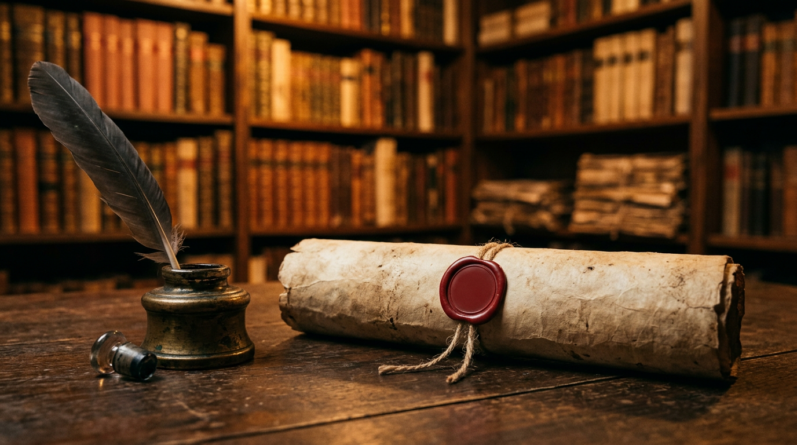

1596 — il feudo perso per un debito.

Centocinquantamila scudi. Una bolla del 30 giugno 1596. Un feudo che passa di mano dopo tre secoli e mezzo. La sentenza che tolse Castel Gandolfo ai Savelli e la consegnò per sempre alla Santa Sede.
I Savelli e Castel Gandolfo, tre secoli e mezzo
Il legame fra la famiglia Savelli e Castel Gandolfo comincia in epoca duecentesca. Nel 1279 il feudo passa nelle mani del cardinale Giacomo Savelli, prefetto papale, che nel 1285 sarà eletto pontefice con il nome di Onorio IV ([Eurocomunicazione — L'appartamento pontificio](https://www.eurocomunicazione.com/2016/10/22/lappartamento-pontificio-a-castel-ganfolfo-si-svela-al-mondo/)). Dopo qualche interruzione — nel 1482 Sisto IV lo sottrae temporaneamente per assegnarlo alla comunità di Velletri, e quattro anni più tardi i Savelli ne rientrano in possesso — il feudo torna alla famiglia romana e resta suo per secoli ([Wikipedia — Castel Gandolfo](https://it.wikipedia.org/wiki/Castel_Gandolfo)).
Il momento più alto arriva sotto Sisto V. Il pontefice, con motu proprio del 26 febbraio 1589, eleva il feudo a ducato in favore di Bernardino Savelli del ramo di Palombara ([Petrucci — I Savelli nei Colli Albani, PDF](https://www.palazzochigiariccia.it/wp-content/uploads/2019/10/38.-Petrucci-I-Savelli-nei-Colli-Albani-in-Gli-Orsini-e-I-Savelli-2017.pdf)). Sul castello sventola ora il titolo ducale. È l'ultimo bagliore prima del tracollo.
Le vecchie famiglie romane, quasi ridotte all'impotenza
Il Cinquecento romano era stato duro per l'aristocrazia baronale. Uno studio classico sul problema dei debiti a Roma nel XVI secolo osserva che le grandi casate — Colonna, Orsini, Savelli, Gaetani — furono «quasi ridotte all'impotenza politica» dall'accumulo di censi e prestiti ([Delumeau — Le problème des dettes à Rome au XVIe siècle](https://www.persee.fr/doc/rhmc_0048-8003_1957_num_4_1_2626)). I Savelli non facevano eccezione. Le rendite dei feudi non bastavano più a coprire gli interessi dovuti; i creditori pretendevano garanzie sempre più solide.
Undici anni dopo l'elevazione a ducato, la situazione era compromessa. I debiti accumulati ammontavano, secondo la Camera Apostolica stessa, a 150.000 scudi ([Vatican State — Castel Gandolfo](https://www.vaticanstate.va/it/altri-organismi/castel-gandolfo.html)). Una somma enorme per l'epoca. Il pontefice regnante era Clemente VIII, al secolo Ippolito Aldobrandini, eletto nel 1592.
30 giugno 1596: la Congregazione dei Baroni
La sentenza porta la data del 30 giugno 1596. Clemente VIII promulga la bolla nota come Congregazione dei Baroni, un provvedimento pensato per regolare i debiti delle grandi casate feudali e per tutelare i creditori. Sulla base di quella bolla, il Commissario della Reverenda Camera Apostolica prende possesso il mese successivo — nel luglio 1596 — dei feudi di Castel Gandolfo e Rocca Priora, sottraendoli ai Savelli che avevano rifiutato di onorare il debito ([Vatican State — Castel Gandolfo](https://www.vaticanstate.va/it/altri-organismi/castel-gandolfo.html), [EWTN — Castel Gandolfo and the Popes](https://www.ewtn.com/catholicism/library/castel-gandolfo-and-the-popes-1585)).
La Camera Apostolica salda immediatamente 24.000 scudi ai creditori più esigenti e si assume l'onere del resto ([Wikipedia — Storia di Castel Gandolfo](https://it.wikipedia.org/wiki/Storia_di_Castel_Gandolfo), [Cancellieri — Notizie di Castel Gandolfo, Archive.org](https://archive.org/stream/letteradifrances00canc/letteradifrances00canc_djvu.txt)). La resistenza degli antichi feudatari è vana: la bolla papale non ammette appello. Nei mesi seguenti parte del debito viene poi restituita alla Camera dai Savelli, e Rocca Priora torna alla famiglia. Castel Gandolfo no.
“Togliendoli ai Savelli che si erano rifiutati di onorare un debito di 150.000 scudi.”Vatican State — nota storica sull'acquisizione di Castel Gandolfo
27 maggio 1604: la sentenza definitiva
Otto anni dopo, Clemente VIII chiude la partita con un atto giuridico che avrebbe legato il borgo alla Santa Sede per tutti i secoli successivi. Il 27 maggio 1604, con decreto concistoriale, Castel Gandolfo viene dichiarato patrimonio inalienabile della Santa Sede e incorporato definitivamente nel dominio temporale della Chiesa ([Vatican State — Castel Gandolfo](https://www.vaticanstate.va/it/altri-organismi/castel-gandolfo.html)). L'elenco dei beni de non alienandis, et infeudandis — quelli che non potranno mai più essere venduti né infeudati — si allunga di un nome ([Wikipedia — Storia dei Castelli Romani](https://it.wikipedia.org/wiki/Storia_dei_Castelli_Romani)).
Da quella data Castel Gandolfo cessa di essere un feudo baronale e diventa una proprietà stabile della Santa Sede. Non sarà più venduto. Non sarà più concesso a nessuna famiglia. Ci vorrà un altro ventennio perché un pontefice — Urbano VIII Barberini, dal 1624 al 1626, con il progetto di Carlo Maderno — trasformi il vecchio castello dei Savelli in palazzo pontificio ([Vatican News — Castel Gandolfo, storia e arte](https://www.vaticannews.va/en/pope/news/2025-07/summer-papal-residence-castel-gandolfo-history-art.html)).
Cosa restò ai Savelli
Non tutto era finito. Nel 1607 Bernardino Savelli sottoscrive con gli abitanti di Albano il primo Statuto della città. Nel 1650 la famiglia otterrà persino il titolo principesco su Albano ([Wikipedia EN — Savelli family](https://en.wikipedia.org/wiki/Savelli_family)). Ma la lenta agonia finanziaria non si arresta: nel 1697 il principe Giulio Savelli, per far fronte agli ultimi debiti, sarà costretto a vendere anche il feudo di Albano ([Wikipedia — Giulio Savelli](https://it.wikipedia.org/wiki/Giulio_Savelli,_III_principe_di_Albano)). La storia di una delle più antiche famiglie baronali di Roma si chiude alle soglie del Settecento.
A Castel Gandolfo, intanto, il vecchio castello dei Savelli era già diventato un altro luogo. Il Palazzo Apostolico. Da quattro secoli, la residenza estiva dei papi. Tutto per una firma del 30 giugno 1596 e per un debito che non fu mai onorato.